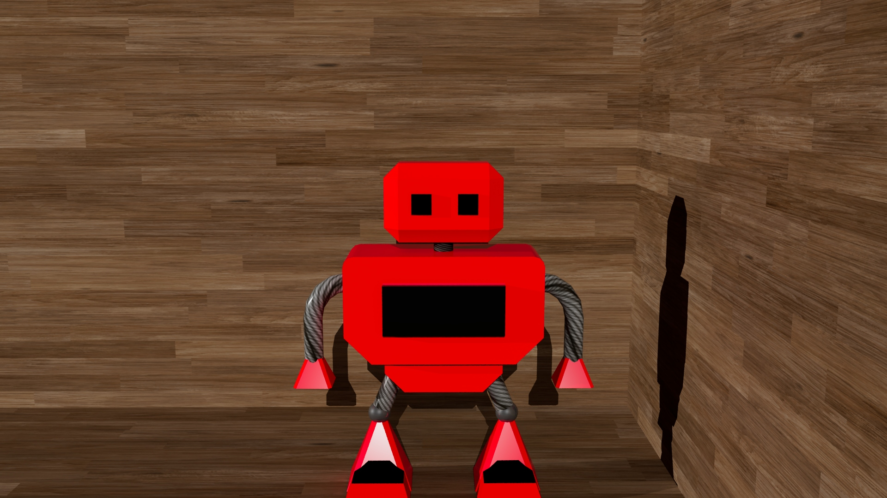

These are examples of my works that I have done recently.
All of these 3 designs are consructed with a similar theme and design aspect in mind, such as how they focus on a centre object. They all use simple shapes and a limited colour palette to create minimalistic designs. However, I have other works that explore other media forms such as my 3D robot design.
I have created a 3 dimensional robot in Maya. The design uses simple primitives but more complex tools to create a more functional look.
This is a simple front render of my 3D robot design. It captures the full robot, head-on, with a baseplate and a background.
Whereas this is an angled render which shows more depth and detail of the robot model. It also shows the lighting and the shadows better than the front render.